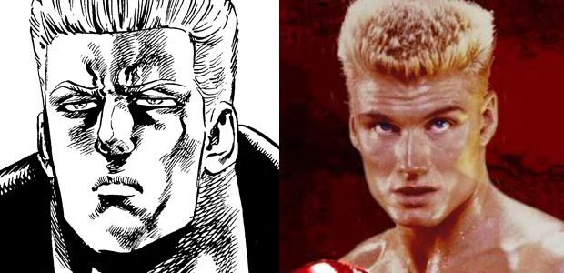

懐かしのアニメの話から、ほろ苦い記憶が…
特に劇的なこともなかったこの一週間、実はブログに何を書こうか迷っていまして。
この日、仕事帰りにＨＰ支配人とラーメンを食べながら、「いざとなったらラーメンネタを…」などと、保険の写メを撮るなどしていました。
どんな話の流れだったか忘れたのですが、アニメや映画の話などになったんです。
支配人は私よりも１０歳ぐらい若いので、そのあたりの世代間格差ギャップを発見するのがまた面白いわけです。
しかしながら伝説の名作は世代の壁を越えて知られているわけで、支配人に限らず自分が教えている小中学生でも「キン肉マン」「北斗の拳」などは知っていて、話も通じます。
で、「実は北斗の拳のキャラクターは実在の映画スターや俳優をモデルにしているんだよ」
なんて、私が支配人にウンチクを垂れていたわけです。
池 村「例えば…金色(こんじき)のファルコって知ってる？」
支配人「知ってますよ！」
池 村「あれはね、映画ロッキー４で出てくるソ連のボクサーがモデルで…」

（左ファルコ／右ドラゴ）
画像引用元：北斗の拳OFFICIAL WEB SITE 福知山シネマ
あぁ、そういえばあんな事もあったけ…。
ドラゴを思い出すとき、必ず対になって思い出すmy事件があるのです。
後の２年半を決定づけた出来事
私が１０代の頃、千葉県北西部の地域はとても学校の先生が厳しいことで有名でした。
いわゆる管理教育。特に私の住んでいた市では、中学入学と同時に男子は丸坊主にしなければなりませんでした。
ある日、学年主任の先生と廊下ですれ違った際に、呼び止められ「そろそろまた髪を切りなさい」と言われたんです。
指の間から髪の毛がはみ出るぐらいの長さになると切らなければならない。
「チッ…またかよ」
心の中で毒づいたものです。
丸坊主にするだけなので床屋に行くまでもなく家で刈ります。
そしてこの日、どういうわけか魔が差しまして…。
私「ねぇ、今日ちょっとドラゴっぽくしてみて」
父「ドラゴって、ロッキーのか？」
私「そうそう。基本的に横だけ切って」
父「まぁどうなっても知らんが、注文通りにはする」
後に調べてみると、映画「ロッキー４」の公開当時は私がまだ小学生の頃。
中学生になった私たち周辺では、ちょっと遅めのロッキーブームが起こっていました。
おそらくテレビ放映されたのか、はたまた前述の漫画「北斗の拳」の影響か…。
とにかく、私を中心に仲の良い男子の間では、ロッキーの敵役であるソ連のボクサー「ドラゴ」が超カッコイイ！ と大人気だったのです。
ドラゴ役の俳優「ドルフラングレン」のカッコ良さを簡潔にまとめると、
●金髪なのに角刈り
●美しい筋肉
●マサチューセッツ工科大卒のインテリ
もう憧れですわ。
ちなみに、映画ロッキーシリーズは主役のロッキー（監督兼主人公のシルベスタ・スタローン）の人間ドラマがウリのボクシング映画ですが、この４作目のみ当時の米ソ冷戦を背景としたメッセージ性の強い作品なので、もしかしたらストーリーに違和感を感じる人がいるかもしれません。とはいえ、ボクシング部分でのアクションは痛快でストレス解消になること間違いなし。一度は観てほしいですね。
というわけで、少しでも彼に近づきたいというチンケな欲を出した私に、翌日どのようなことが起きたかと言うと…
友人たちからの評判は悪くなかった。
「今日の池ちゃんの髪型イイじゃん」
「まぁ一応ドラゴ意識してみた、みたいな～」
そんなふうに気を良くしていたのも給食の時間まで。
５時間目の書道の時間、担当は例の学年主任の先生です。
授業開始のチャイムと同時に教室の後ろから入ってきた先生の足音が、私の席の後ろで止まりました。
イヤ～な予感は的中し、１分後、私は皆の前で自分の髪の毛を切るという屈辱の儀式を強いられ、さらに数分後には職員室でバリカンにより究極の五厘刈り姿に変貌を遂げました。
この時から私は、何かと皆を代表しての叱られ役になってしまいました。
まあ、私自身もかなり反抗的で生意気な生徒だったことも災いしていたのですが。
また、それなりに悪いことにも憧れる年頃ですから、悪さもしました。
中２の時には親を呼び出されることもしばしば（なぜか私だけ両親とも呼び出されたり…）で、大人に迷惑をかけまくっていました（反省）。
数えきれないぐらい先生に殴られたものです。
ちょっと今の人たちからすれば考えられないような時代だったように見えるかもしれません。
でもホンの少しだけ前の時代のホントの出来事です。
今となって振り返ってみれば、私個人としては、今の時代よりは健全だったような気もします。
今だったら体罰だなんだって、すぐ訴えられちゃったり、ＳＮＳに投稿されて炎上したりで大変ですよね。
そりゃ、ぶん殴られたらムカつきますけど、こっちだって言いたいことも言ったし、わかってくれる先生もいたし、自分も反省できた。
殴る方も加減がわかってましたからね。
というより、今の子たちを見てるとイイ子が多いですよ。
そもそも殴りたくなるような子がほとんどいない。
だからたまにそんな子に出会うと、逆に嬉しくなってしまうんですよね（笑）。
そんなわけで、また思い出したら昔話をしたいと思います。